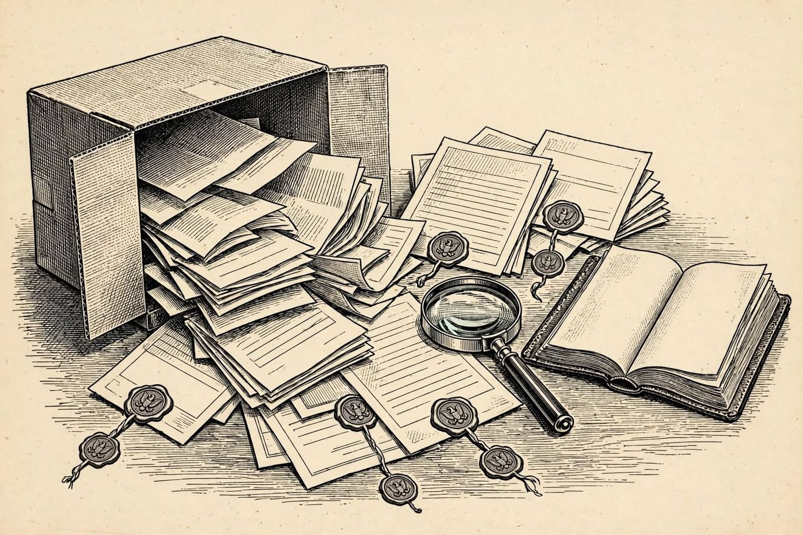

13 de diciembre
El expediente Vesper
Libro · págs. 54-59
Audio del día
Transcripción
«Catorce cuadros colgados en las mejores galerías de Europa. Catorce obras atribuidas al Maestro de Vesper. Pero deténgase a mirar el índice del libro verde: los años de hallazgo, las firmas, y sobre todo, esas iniciales repetidas a lápiz en los márgenes. Los falsificadores usan barnices químicos para fingir el paso de los siglos, pero no pueden borrar la identidad del verdadero artista. Resuelva el crucigrama y descubra la verdad oculta tras la colección.»

Intenta resolverlo primero. Abre solo lo que necesites, en este orden.
1Pista sutil
Para avanzar rápido en el crucigrama, completa primero las palabras largas, que cruzan a muchas otras: PROCEDENCIA (vertical 2), CERTIFICADO (vertical 7) y RESTAURADOR (horizontal 8).
2Comprobación parcial
La palabra horizontal 3 es PATINA y la horizontal 12 es CRAQUELADO.
3Pista fuerte
Verticales: 1 COPIA, 2 PROCEDENCIA, 3 PIGMENTO, 4 LIENZO, 7 CERTIFICADO, 9 es una palabra que significa «apócrifo». Horizontales: 3 PATINA, 5 PERITO, 6 BARNIZ. Con eso, las casillas marcadas empiezan a hablar.
4Solución oficialSpoiler si no lo has intentado
Respuestas del crucigrama:
Horizontales: 3. PATINA, 5. PERITO, 6. BARNIZ, 8. RESTAURADOR, 10. FIRMA, 11. SUBASTA, 12. CRAQUELADO, 13. TASACION.
Verticales: 1. COPIA, 2. PROCEDENCIA, 3. PIGMENTO, 4. LIENZO, 7. CERTIFICADO, 9. FALSO.
Casillas con asterisco: Forman la palabra FALSO.
Para el desenlace de la historia, vuelve al libro: la sección de soluciones está al final.